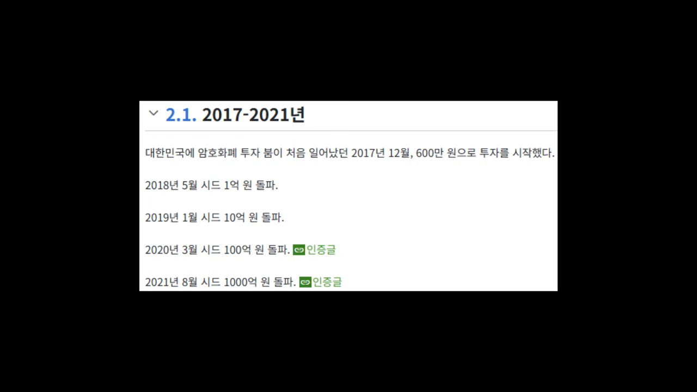
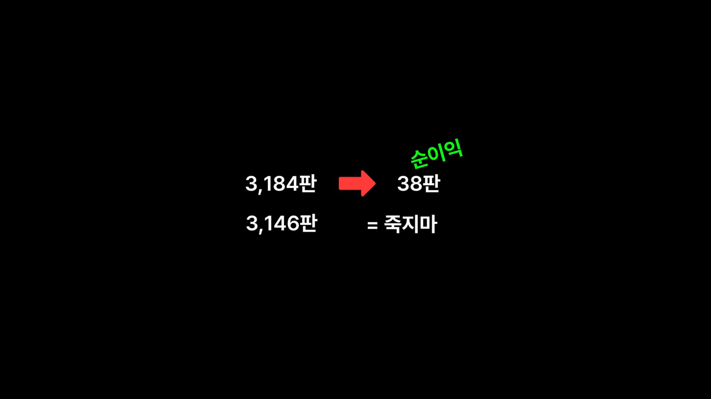
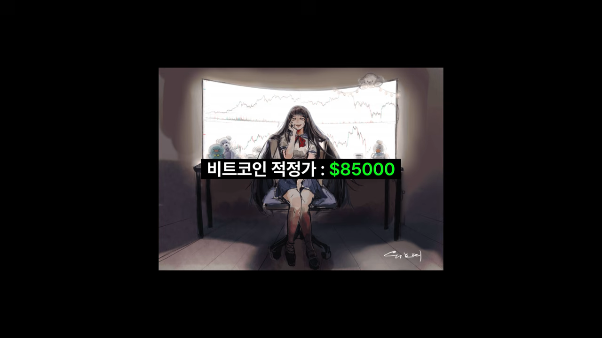
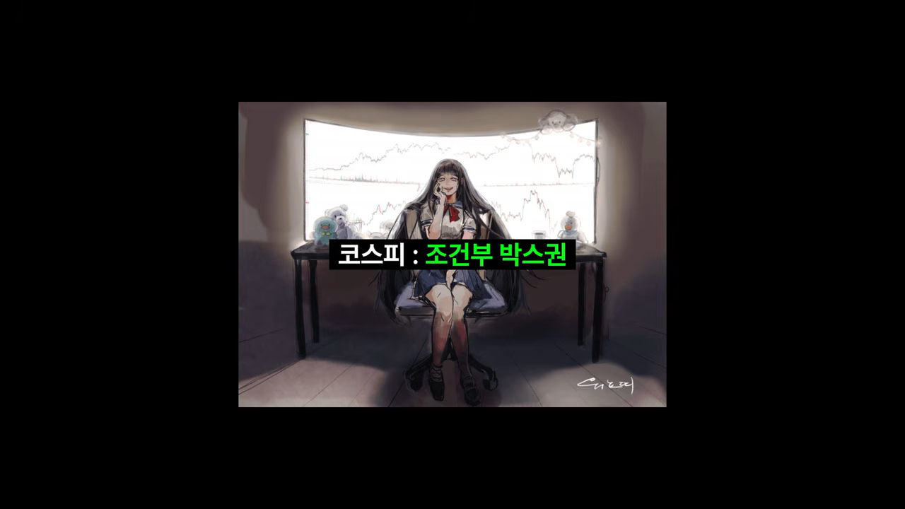

공개된 기록, 숫자가 맞을까요?
워뇨띠는 한국 코인 투자자 사이에서 전설로 불리는 트레이더예요. 영상은 인터넷 백과에 정리된 그의 이야기부터 보여 줘요. 화면 첫 줄이 '2017년 12월, 600만 원으로 투자를 시작했다'예요. 그 아래로 1억, 10억, 100억, 1,000억 원을 넘긴 시점이 차례로 적혀 있어요.

공개된 기록이 믿을 만한지부터 봤어요
워뇨띠가 공개한 건 2018년 3월부터 2021년 12월까지 비트멕스 거래소에서 체결된 기록 전부예요. 압축을 풀면 600메가바이트, 140만 줄이 넘어서 엑셀로는 열리지도 않아요. 그래서 분석자는 코드로 체결을 하나하나 이어 붙여 포지션을 다시 만들었어요. 보유 수량이 0에서 시작해 다시 0으로 돌아오면 한 판으로 셌어요.
이렇게 다시 맞춘 숫자를 본인이 밝힌 숫자와 나란히 놓으면 이래요.
| 항목 | 본인 발표 | 체결 기록으로 다시 계산 |
|---|---|---|
| 포지션 수 | 약 3,200번 | 3,184개 |
| 주문 수 | 약 2만 3천 번 | 23,417개 |
| 누적 실현 손익 | 3,537 BTC | 3,537.3 BTC (포지션 손익 + 펀딩비) |
누적 손익은 지갑 기록과 소수점 첫째 자리까지 같았어요. 분석자도 거래소 공식 자료와 대조한 건 아니라고 선을 그어요. 다만 숫자끼리 한 치도 어긋나지 않으니, 대충 만든 자료는 아니라고 봐요.
넣은 돈보다 뺀 돈이 훨씬 많았어요
첫 입금은 2018년 3월 5일 0.17 BTC로, 당시 시세로 200만 원쯤이에요. 열흘 동안 몇 번 더 넣어 합계가 600만 원대가 되니, 전설과 얼추 맞아요. 전체 입금은 18번, 합계 14.5 BTC예요.
재미있는 건 넣었다 뺐다를 계속했다는 점이에요. 입금에서 출금을 뺀 순입금이 가장 많았을 때도 2.34 BTC, 당시 돈으로 2,000만 원 정도였어요. 아래 그림은 영상이 짚은 시점만 순서대로 놓은 거예요. 간격은 실제 기간에 맞추지 않았어요.
출금 합계는 2,815 BTC예요. 뺄 당시 시세로 약 9천만 달러, 원화로 1,000억 원쯤이에요. 잔고가 가장 많았던 날은 2021년 6월 19일로, 1,531 BTC(약 630억 원)였어요. 모두 비트멕스 계좌 하나만 따진 숫자예요.
자주 이기고, 크게 잃고, 몇 판에서 벌었어요
3,184판 중 이긴 판은 75.6%예요. 네 판 중 세 판을 이긴 셈이라, 여기까지만 보면 역시 고수다 싶어요. 그런데 한 판에 얼마를 벌고 잃었는지를 보면 그림이 달라져요.
이긴 판의 평균 수익은 3.3 BTC, 진 판의 평균 손실은 6 BTC예요. 손익비로 치면 0.56이에요. 트레이딩 강의에서 늘 나오는 말이 '손절은 짧게, 익절은 길게, 손익비는 최소 1대 2'인데, 워뇨띠는 정확히 반대로 했어요.
진 포지션을 들고 있는 시간도 이긴 포지션보다 길었어요. 2018년부터 2021년까지 네 해 모두 그랬어요. 2021년 보유 시간 중앙값은 이긴 판 16시간, 진 판 34시간 정도예요. 초보에게 하지 말라는 '물린 거 버티기'를 그대로 한 거예요.
돈은 몇 판에서 나왔어요
그럼 3,500 BTC는 어디서 났을까요? 분석자는 포지션을 수익이 큰 순서로 줄 세웠어요. 위에서부터 몇 판을 더해야 전체 순이익에 닿는지 보면 이래요.
가장 많이 번 세 판은 모두 2021년에 나왔어요.
| 순위 | 언제 | 방향 | 수익 |
|---|---|---|---|
| 1등 | 2021년 6월 18일 진입, 80일 가까이 보유 | 비트코인 롱 | 246 BTC |
| 2등 | 2021년 6월 | 비트코인 숏 | 232 BTC |
| 3등 | 2021년 8월 | 비트코인 롱 | 180 BTC |
1등 포지션은 들고 있는 동안 체결만 25,000번 넘게 쪼개서 들어가고 나갔어요. 손익비 이야기와 합치면 구조가 보여요. 평소에는 잘게 벌고 잘게 잃고, 가끔 크게 물려요. 그러다 1년에 몇 번 오는 큰 추세에서 계좌 전체로 크게 벌어요. 분석자는 나머지 3,000여 판을 그 몇 판이 올 때까지 시장에 붙어 감을 유지하는 비용으로 봐요.
레버리지를 내리기 전과 후
지금은 다들 워뇨띠를 신처럼 보지만, 분석자는 2018년의 그를 레버리지 도박꾼에 가까웠다고 말해요. 여기서 레버리지는 포지션 크기를 계좌 잔고로 나눈 값이에요.
- 2018년 레버리지 중앙값은 2.6배였고, 그해 포지션의 13%는 10배가 넘었어요.
- 강제 청산당한 포지션 중에는 40배가 넘는 것도 있었어요. 강제 청산은 한 해에만 24번이에요.
- 보유 시간 중앙값은 13분이었어요. 몇 분 만에 사고파는 스캘핑에 가까워요.
2018년 9월, 17일 만에 90%가 사라졌어요
9월 5일 잔고는 30 BTC였어요. 비트코인이 크게 빠진 날 11배짜리 롱을 들고 있어서, 하루 만에 18 BTC가 됐어요. 14일에는 이더리움 숏이 강제 청산당했어요. 21일에는 리플이 하루 만에 급등했는데, 숏을 쳤다 물리기를 반복하다 강제 청산까지 당해 그날만 15 BTC를 잃었어요. 아래 막대에서 9월 22일 잔고가 거의 보이지 않을 만큼 줄어든 게 이 결과예요.
대부분은 여기서 접어요. 워뇨띠는 다음 날 0.64 BTC를 넣고 다시 시작했어요. 10월 +83%, 11월 +473%, 12월 +111%를 거뒀어요. 11월은 비트코인이 6,300달러에서 4,000달러 밑으로 무너진 달인데, 그걸 숏으로 받아먹었어요.
진짜 변화는 그다음이에요
분석자가 중요하게 보는 건 부활이 아니라 그 뒤의 변화예요. 해마다 레버리지는 내려가고, 한 포지션을 들고 있는 시간은 길어졌어요.
2018년과 2021년을 나란히 놓으면 같은 사람이라고 보기 어려울 정도예요.
| 항목 | 2018년 | 2021년 |
|---|---|---|
| 레버리지 중앙값 | 2.6배 | 0.6배 |
| 가장 높은 레버리지 | 40배 넘는 것도 있음 | 2.6배 |
| 강제 청산 | 24번 | 사실상 0번 |
| 포지션 수 | 2,201번 | 216번 |
| 전체 수익 중 그해 몫 | 6% | 57% |
2019년부터는 10배 넘는 포지션이 하나도 없어요. 강제 청산은 2020년 3월 코로나 폭락 때 작은 것 하나가 걸린 게 전부예요. 정리하면 덜 할수록, 낮은 배율로 할수록, 오래 들고 있을수록 더 벌었어요.
워뇨띠가 오래전부터 입버릇처럼 한 말이 '저배율 격리'예요. 데이터로 보면 처음부터 그랬던 게 아니라, 2018년 9월에 거의 다 잃고 돌아온 뒤에 그렇게 바뀐 거예요.
저배율이어도 맞을 땐 맞았어요
2021년 5월 19일, 비트코인이 장중에 30% 넘게 빠졌어요. 워뇨띠는 떨어지는 칼날에 비트코인과 이더리움 롱을 잡았다가 둘 다 반나절 만에 손절했어요. 하루에 잃은 돈이 282 BTC, 그날 시세로 110억 원이고 잔고의 44%예요. 그다음 일주일은 아래처럼 흘러가요.
그 밖에 눈에 띄는 거래 습관
영상은 끝으로 거래 습관 세 가지를 빠르게 짚어요.
스탑로스 주문을 거의 안 써요. 스탑 주문이 한 번이라도 체결된 포지션이 전체의 1.4%뿐이에요. 손절이든 익절이든 거의 다 손으로 했다는 뜻이에요.
수수료를 거의 안 냈어요. 거래 대금 기준 71%가 지정가 주문이었어요. 비트멕스는 지정가 주문에 수수료를 돌려주는데, 이렇게 받은 리베이트가 298 BTC예요. 시장가 주문으로 낸 수수료는 376 BTC라서, 4년 동안 280억 달러를 거래하고도 실제로 낸 수수료는 78 BTC예요. 펀딩비로는 오히려 150 BTC를 벌었어요.
롱과 숏이 거의 반반이에요. 롱 1,570번, 숏 1,614번이에요. 비트코인이 1만 1천 달러에서 4만 6천 달러까지 오른 4년인데도, 숏으로 번 돈이 롱으로 번 돈보다 많아요. 시장이 좋아서 번 게 아니라는 게 분석자의 해석이에요.
분석자가 얻은 세 가지 결론
분석자는 매매 기록을 다 보고 세 가지를 느꼈다고 해요. 화면에는 하나씩 짧은 문구로 띄워요.
- 승률은 결과지 비결이 아니에요. 75%를 이기는데 손익비는 0.56이에요. 정석대로 했으면 이만큼 못 벌었을 수도 있어요. 규칙을 어기고도 버틴 건 이 사람이라서 가능했다고 분석자는 봐요.
- 돈은 몇 판에서 나와요. 나머지 판에서 할 일은 크게 먹는 게 아니라 안 죽는 거예요.
- 안 죽는 방법은 레버리지였어요. 2.6배에서 0.6배로 내린 뒤 강제 청산이 사라졌고, 하루에 44%를 잃어도 일주일 만에 회복했어요.
두 번째 결론을 띄운 화면은 3,184판 중 38판이 순이익을 만들고, 나머지 3,146판에는 '죽지 마'라는 말을 붙였어요.

워뇨띠와 개미들의 차이는, 거기서 배율을 내렸냐 안 내렸냐 일지도 모르겠습니다
— 영상 08:20
함께 공개한 '90일 서한'
워뇨띠는 거래 기록과 함께 '90일 서한'이라는 글도 올렸어요. 자기 전망을 적어 두고 나중에 스스로 검증하겠다는 글이에요. 화면에는 그 전망이 두 장으로 나와요. 첫 장은 비트코인 적정가 8만 5천 달러예요.

둘째 장은 코스피예요. 나스닥은 완만한 상승을, 코스피는 '조건부 박스권'을 예상했어요.
